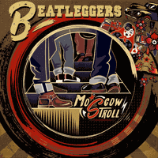

the Beatleggers - Moscow Stroll (EP, 2020)
01 - Wanderer (2:48)
02 - Tell Me Yes (4:06)
03 - Deadman (2:54)
04 - Moscow Stroll (4:00)
05 - Move It (2:32)
06 - Train In The Rain (3:24)
© the Beatleggers :: [-]
Notes
Review
359/366 (Project 366)
Not the best, but somewhat stubborn and unyielding (neo)Rockabilly. Actually, the lead guitar sounds very attractive and stands out. Some good rhythm work, great solos and a pretty vibe. The tunes themselves are pretty different, but intended to be "memorable". Strenuous double bass and fine rhythm guitar. But vocals are not for everybody. For the rest: fun, excitement and enjoyment of the performance. It's hard to say that there are some very specific features. Rather, quite common. But an attempt at a bright presentation of the material, as well as dilution with a little punky tone and purely rebellious Rock'n'Roll (sometimes with its UK mood), deliver powerful emotions. Not wild. And even somewhat melodic.
"Wanderer" is about rockin' running with an epic tune, (neo)Mood, but quite authentic solo guitar flavor. A bit punky feel and fighting vocals. "Tell Me Yes" with such a dreamy and nostalgic melody. The overall composition is a bit tiresome maybe, but the idea is pretty good. Sensitive vibe and lovely tone. "Deadman" starts with cool rocking vibrations and then psycho craze starts to rage. Maybe a kind of fancy and freaky attempt to produce soft Psychobilly. Double bass with its style that is already familiar from previous songs. "Moscow Stroll" is a modish try to perform groovy stroller. Fine one, but cannot be too serious about it. Just fun, perhaps. "Move It" - sadly to write but I like this cover much more than their original songs. Matched their style so well, and even song is a somewhat more sparkled and fancier. But in fact, not so memorable or not about special groove. A set of some chords and spanks. "Train In The Rain" is a fine tune, but so straight tempo. Great potential, just like the second track.
They do not quite so (neo) as (neo) is perky for. But they were balancing around. I feel that this is a good debut EP. And it's pretty interesting to look forward to their further recordings. Mostly sets the tone and overlaps other sides - vocals. There are also special charms of the lead guitar and the perseverance of the double bass.